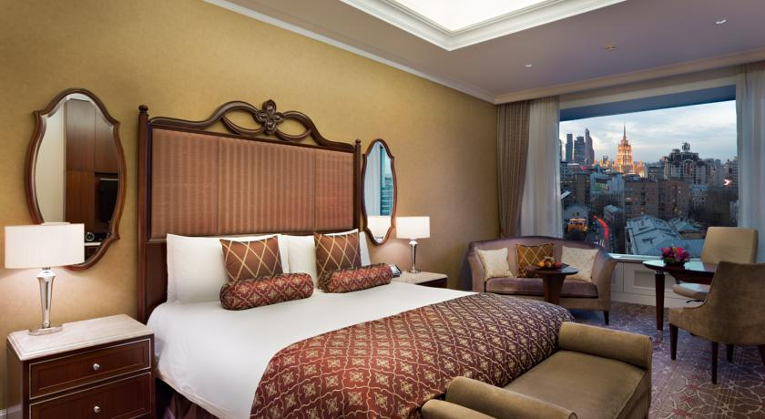

Лотте Отель Москва



Отель «Лотте Москва» расположен в финансовом и торговом центре Москвы. К услугам гостей роскошные номера с ультрасовременными удобствами. В отеле работают 2 превосходных ресторана, большой спа-салон и 20-метровый крытый бассейн.
Все просторные номера оснащены горизонтальным сейфом, мини-баром, а также специальной сенсорной панелью для регулирования освещения, температуры, управления телевизором и радио. Гости могут использовать этот прибор в качестве навигатора по отелю, а также для того, чтобы проверить прогноз погоды, свериться с картой метро или связаться с сотрудниками отеля.
В ресторане MENU можно отведать прогрессивную европейскую кухню с блюдами средиземноморской кухни в современной интерпретации опытного шеф-повара. Кроме того, в ресторане MEGU сервируют разнообразные блюда японской и интернациональной кухни.
В отеле «Лотте Москва» в распоряжении гостей спа-центр, в котором можно заказать более 300 различных видов терапии, сочетающих традиционные русские и балийские процедуры. Для гостей, предпочитающих активный отдых, в отеле обустроен ультрасовременный фитнес-центр с сауной, хаммамом и шелковой ванной.
Отель «Лотте Москва» расположен в 15 минутах езды на автомобиле от Красной площади, Кремлевского дворца и Большого театра.
Это любимая часть города Москва среди наших гостей согласно независимым отзывам.
Мы говорим на вашем языке!
Лотте Отель Москва — принимает гостей с 31 авг. 2010
Номеров в отеле: 300, Сеть отелей: The Leading Hotels of the World